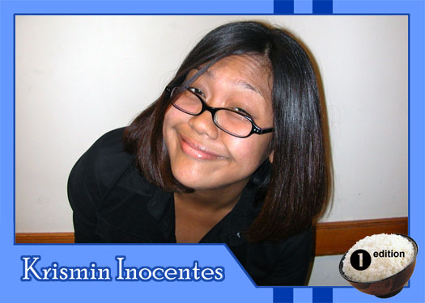

|
Why did you get involved with Theatre Rice? I wanted to build my tolerance to Asian Americans. What do you hope to gain from TR? A very high tolerance to Asian Americans, free admission to shows and a date with Frank Nguyen. What are your favorite films or t.v. shows? The Godfather, The Usual Suspects, Boondock Saints, Goonies and Willow Who are your role models? Bill Clinton because he alone can stand to defend all of my habits. If you had a quote that defines how you live life, what would it be? "Dangerous and ambitious while schemin' on gettin' riches"--TupacShakur |